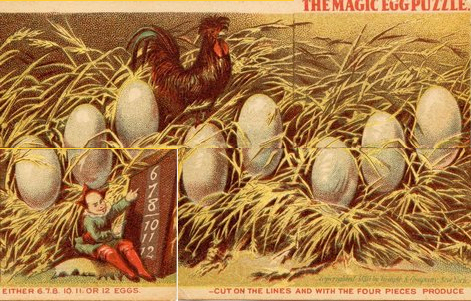
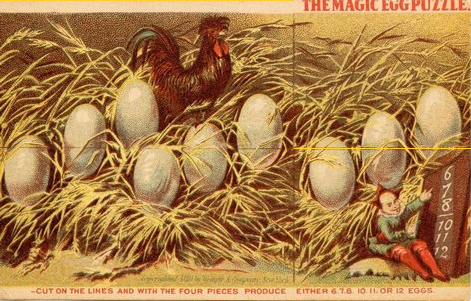
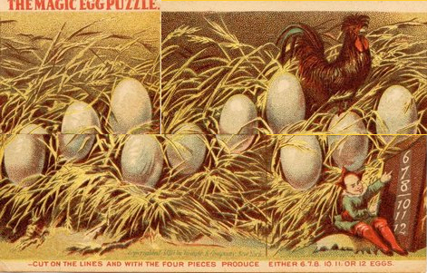
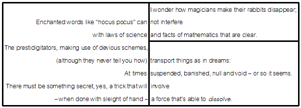
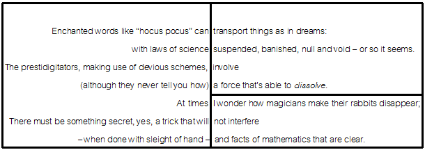
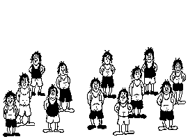
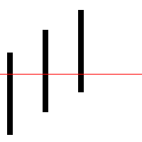
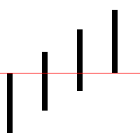
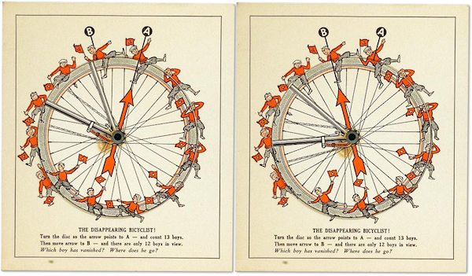

Vanishing puzzle
1880 年，Wemple & Company 在纽约销售了一张名为“神奇鸡蛋拼图”的广告卡。不同的拼法会导致不同的鸡蛋个数。  
1981 年，Donald E. Knuth 创作了一首诗 Disappearances。通过将右侧部分上下交换，诗的行数发生变化。
 
网上也流行过一个动图，重新拼接图片后，孩子的数量会变化。

这些现象看似神奇，但原理还是十分简单的，我们将画中的元素抽象成线条，可以更直观的感受到。
下图通过将上半部分向右平移，使线条数量由三个变成四个。明显，这个过程中每条线都变短了。
 
回到鸡蛋拼图，其实能看到，在第三张图里，每个鸡蛋都是残缺的。
数学家 Sam Loyd 也创造过一系列圆形的 Vanishing puzzle，其原理和以上的图是类似的。
